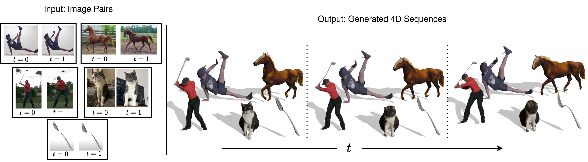

We present TwoSquared, a method that takes a pair of 2D images representing the initial and final states of an object as input and generates texture-consistent, geometry-consistent 4D continuous sequences. It is designed to be robust to varying input quality, operating without the need for predefined templates or object-class priors. This adaptability enables greater flexibility in processing diverse images while maintaining structural integrity and visual coherence throughout the generated sequences. As demonstrated, our approach effectively handles humans, animals, and inanimate objects.